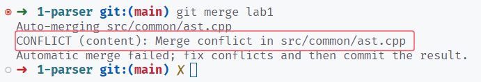
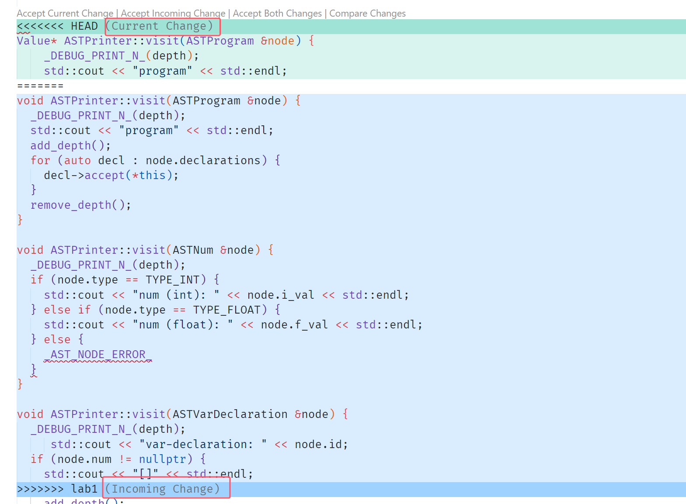

Lab2 中间代码生成¶
本次实验需要同学们在 Lab1 实现的 Cminusf 解析器基础上，完成从语法树向中间代码的自动化翻译过程。
实验要求¶
根据 Lab1 的要求，学生有两个远程仓库：
- upstream：课程发布实验代码的公开仓库
- origin：学生 fork 得到的私有仓库
{kind=link}
两个仓库各有 3 条分支（红色字体）：main、lab0 和 lab1，如下图。最上边的 lab1 和 main 代表本地的分支，分别追踪远程的 origin/lab1 和 origin/main，main 前边的星号 * 和绿色字体代表当前处于 main 分支下：
{kind=link}
Info
以上两条命令分别是：git remote -v 和 git branch --all -vv，如果第二条命令的输出中缺少 upstream 的分支，你可以通过 git fetch --all 来获取。
在实验一中，我们通过 lab1 分支发布实验，与 lab0 作为区分，因此学生也是处于 lab1 分支下完成实验。为了更优雅地发布实验，从 lab2 开始，我们将使用 main 分支发布实验。在开始撰写本次实验代码之前，学生需要抓取最新的 main 分支到本地，然后将 lab1 分支合并到 main 分支，并处理可能的冲突。以下是详细的指导。
拉取最新代码¶
首先切换到 main 分支下：
git checkout main：如果git branch的输出存在 main；- 或
git checkout -b main --track origin/main：如果git branch的输出不存在 main。
然后使用 git pull upstream main 获取最新内容。此时你应该可以在项目下找到 tests/2-ir-gen/** 和 src/lightir/** 等内容。
合并 lab1 分支¶
检查当前关于 lab1 的实验内容：src/parser/lexical_analyzer.l、src/parser/syntax_analyzer.y 和 src/common/ast.cpp，你会发现曾经完成的代码不见了，这三个文件处于 lab1 开始前的版本。现在使用 git merge lab1，将你在 lab1 完成的内容合并到主分支（main）下。
如果你遇到了冲突
在执行 merge 时，git 会尝试自动合并经过修改的文件内容，如果一处内容同时被两方（current 和 incoming）修改，就会产生冲突，需要手动决定保留哪一方的更改（或者都保留）。
下图就是在合并时出现了冲突的例子，表示在 src/common/ast.cpp 文件出现了冲突。

{kind=link}
我们检查这个文件，看到一处冲突，截图如下： 
{kind=link}
在这里，我们（上游仓库）最新的代码将 ASTVisitor::visit 接口的返回值更新成了 Value *，这种接口变动要以上游为准。现在是将 lab1 合并进 main 分支，所以进行 merge 的双方，current 是上游内容，incoming 是 lab1 的内容，在这里保留 current 内容。
在完成文件的更改后，保存文件，你仍然在 merge 的阶段，你可以使用 git status 查看，并使用 git merge --continue 完成你的合并操作，如下图所示。
{kind=link}
事实上，在处理本次合并可能的冲突时，只需要保留你在 lab1 编写的代码即可，其余基本上都保留上游仓库的最新内容。
此时进入 build 文件夹，执行 cmake .. 和 make -j 编译最新的程序，然后进入 lab1 的测试目录 tests/1-parser，执行 lab1 的两个脚本。在正确合并分支的情况下，你应该能够正常编译项目并通过 lab1 的两个脚本，这时你可以开始本次实验的撰写了。
ZLIB 相关报错
如果你在 cmake .. 一步遇到如下报错Target "IR_lib" links to target "ZLIB::ZLIB" but the target was not found.，请使用 sudo apt install zlib1g-dev 安装 zlib 库，然后重新 cmake .. && make。
实验内容¶
本次实验需要分阶段完成及验收。
阶段一¶
- 内容一： 阅读 Light IR 预热并参考 Light IR 手册 和 Light IR C++ 库，掌握手写 Light IR，使用 Light IR C++ 库生成 IR 的方法。
- 内容二： 阅读访问者模式，理解 C++ 访问者模式的工作原理及遍历顺序。
阶段一需要 回答 Light IR 预热与访问者模式文档中的思考题，回答内容保存为 answer.pdf。并完成 tests/2-ir-gen/warmup/stu_ll 与 tests/2-ir-gen/warmup/stu_cpp 目录下代码的编写。
Deadline
2024 年 10 月 18 日 23:59
阶段二¶
阅读 IR 自动化生成，Cminusf 语义，补充 include/cminusfc/cminusf_builder.hpp 与 src/cminusfc/cminusf_builder.cpp 文件，并通过 tests/2-ir-gen/autogen/testcases/目录下 lv0_1, lv0_2, lv1 级别的测试样例。
Deadline
2024 年 10 月 27 日 23:59
阶段三¶
在阶段二的基础上，继续补充 include/cminusfc/cminusf_builder.hpp 与 src/cminusfc/cminusf_builder.cpp 文件，并通过 tests/2-ir-gen/autogen/testcases/ 目录下所有提供的测试样例。
Deadline
2024 年 11 月 2 日 23:59
提交内容¶
- 阶段一：在希冀平台提交你的
answer.pdf文件，在希冀平台提交你实验仓库的 url（如https://cscourse.ustc.edu.cn/vdir/Gitlab/xxx/2024ustc-jianmu-compiler.git）。 - 阶段二、三：在希冀平台提交你实验仓库的 url（如
https://cscourse.ustc.edu.cn/vdir/Gitlab/xxx/2024ustc-jianmu-compiler.git）。